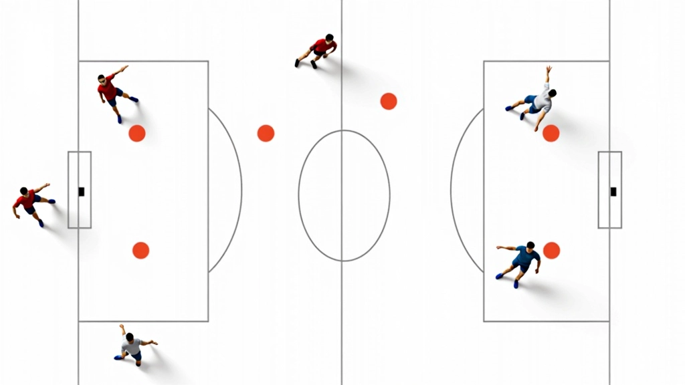

تحسين سرعة القفزة والارتفاع
تمارين متخصصة لزيادة قوة الساقين والقدرة على القفز العالي بشكل متكرر دون إرهاق.
تعلم كيفية تحليل تشكيلة الدفاع الخصم واختيار نوع الهجوم السريع الأنسب في كل موقف. هذا المفهوم الأساسي يفرق بين لاعب وسط عادي وآخر متقدم يفهم اللعبة بعمق.

الفرق بين لاعب وسط عادي وآخر متميز ليس فقط في القوة البدنية أو القفزة العالية. الحقيقة أن أفضل لاعبي الوسط يملكون قدرة فريدة على قراءة ما يفعله الخصم قبل أن يحدث. هم يرون الثغرات في الدفاع والمسافات الآمنة قبل أن يصل الموزع إلى الكرة حتى.
عندما تتقن هذه المهارة، تصبح خطراً حقيقياً. أنت لا تنتظر أن تخبرك خريطة اللعب — أنت تقرأها بنفسك وتتحرك في الاتجاه الصحيح قبل أن يرفع الموزع الكرة. هذا يعطيك مزايا نفسية وفنية معاً.
قراءة الدفاع ليست عملية غامضة. هي مجموعة من الملاحظات البسيطة التي تصبح غريزة مع التدريب. أولاً، راقب موقع المدافعين — بالذات الحائط الأمامي. إذا كانوا قريبين جداً من بعضهم، هناك فجوة في الجانب. إذا تركوا مسافة بينهم، الخطر موجود في المنتصف.
ثانياً، انظر إلى سرعة حركة المدافعين. إذا كانوا بطيئين أو متأخرين عن الإيقاع، أنت لديك وقت أكثر للتصرف. إذا كانوا سريعين وجاهزين، فأنت بحاجة إلى اختيار ذكي وضربة سريعة جداً.

هذا المحتوى مقدم لأغراض تعليمية وإعلامية فقط. تطوير المهارات يتطلب التدريب المنتظم تحت إشراف مدرب متخصص. كل لاعب لديه احتياجات فريدة، والتقدم يختلف من شخص إلى آخر. استشر مدربك دائماً قبل تطبيق تقنيات جديدة.
بعد أن تقرأ الدفاع، تأتي المرحلة الثانية: اختيار الهجوم الذي يستغل تلك الثغرات. هناك عدة خيارات متاحة أمامك كلاعب وسط:
المفتاح هو عدم التردد. بمجرد أن تقرأ الموقف، اتخذ قرارك وطبقه بثقة. التردد والتأخير هو ما يفسد أفضل الفرص. تدرب على اتخاذ القرار بسرعة — مع الموزع والمدافعين معاً في نفس الوقت.

فريق التحرير والمراجعة
كتبه فريق أكاديمية الهجوم السريع التحريري، متخصص في تقديم تمارين عملية وسهلة التطبيق.
الآن بعد أن فهمت النظرية، تحتاج إلى تطبيق حقيقي. إليك تدريب بسيط لكن فعال جداً يمكنك أن تقوم به مع فريقك:
قراءة الدفاع واختيار الهجوم المناسب ليس موهبة طبيعية فقط — إنها مهارة يمكن تطويرها بالتدريب المنظم والتركيز. كل مرة تلعب فيها، أنت تتعلم. كل مرة تقرأ فيها الدفاع بشكل خاطئ، أنت تصبح أفضل في المرة القادمة.
ما يفصل بين لاعب وسط عادي وآخر متقدم هو القدرة على رؤية اللعبة بسرعة وتطبيق الحل الأنسب فوراً. هذا يتطلب وقتاً، لكنه يستحق الاستثمار. ابدأ بالتدريبات البسيطة اليوم، وستجد نفسك تقرأ الدفاع بطبيعية خلال بضعة أسابيع.
استكشف المزيد من التمارين والتقنيات المتقدمة لتطوير مهاراتك كلاعب وسط.
العودة إلى التمارين الكاملة
تمارين متخصصة لزيادة قوة الساقين والقدرة على القفز العالي بشكل متكرر دون إرهاق.

شرح تفصيلي لحركة الذراع والمعصم التي تزيد من دقة الضربة وقوتها مع تقليل الإصابات.

تمارين عملية لمزامنة حركتك مع توقيت وصول الكرة من المُوزِّع بدقة عالية.